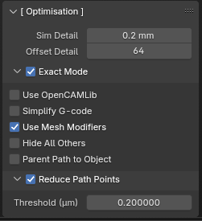

Getting Started#
This is a step-by-step tutorial on generating your first toolpath with Fabex.
For detailed descriptions of User Interface options go here.
Setup your Scene#
You can use any object to generate toolpaths, but for the purpose of this guide we will use Suzanne, the monkey.
To reproduce the results shown below you will need to:
select and delete the default cube
click Add > Mesh > Monkey (or press Shift+A to get the Add Menu and do the same)
Now we are going to scale and rotate the monkey head so that it gives us the best results and doesn’t trigger any warnings about being too big for our machine:
press S, then .05 on your keyboard to scale it down
press R, then X, then -90 to rotate it on the X axis by -90 degrees
press S, then Z, then .5 to scale it down on the Z axis
Note
If you don’t want to reproduce the guide results exactly, you can skip all of the above and perform the operations on the default cube, but you will get a warning about the object being too big for your machine if you don’t scale it down to fit inside the CAM_Machine area.
Change the Render Engine#
In the Properties area, in the Render tab, set the Render Engine to Fabex CNC/CAM

Setup your Machine Parameters#
In the [ Machine ] panel, enter the specs of your CNC Machine, including:
Post-Processor
Unit System (Metric or Imperial) & Length Unit (ft, in, m, mm)
Work Area
Feedrate & Spindle Speed Min/Max
Machine G-code output options
Custom Position Definitions for Start, End and Tool Change
Multi-Axis Options and more

Add an Operation#
In the [ Operations ] panel, click the + button to add a new Operation.
Once an Operation has been added, the rest of the Interface will populate with Operation settings panels.
Choose a Milling Strategy#
In the [ Operation Setup ] panel, choose Parallel from the Strategy dropdown.
Outline Fill, Circles, Spiral, Block, or Cross will also work for this example.
Waterline and other operations require curve data source. See how to generate curves from mesh model here.
Note
If you are not sure what each milling strategy does, check the Strategies page for pictures and explanations of how each works.
Setup Stock Material and Position your Object#
In the [ Material ] panel, click Size from Model to allow Fabex to auto-calculate the size of the required Stock Material, you can then set Additional Radius to mill additional stock around object.
If you know the dimensions of your stock, e.g. a plywood sheet, you can uncheck Size from Model and enter the dimensions manually.
You can manually position object inside the Machine’s Work Area, or use Position Object to position it automatically using the listed alignment options.
Note
If the box representing material doesn’t update, uncheck Size from Model and then check it again.
Configure the Operation Settings#
[ Operation Setup ]#
In the [ Operation Setup ] panel, under the Parallel settings, find Toolpath Distance.
Between is the distance between toolpaths, and allows you to set Stepover values to determine how close each path should be to the next.
Along determines path accuracy. Paths are made up of points, and the lower the distance between them, the more points you will have.
Lower values result in more accurate toolpath, but make computation slower and increase amount of resulting G-code.
[ Optimisation ]#
Click to enable Exact Mode - it improves accuracy.
You can also select Use OpenCAMLib - it improves accuracy and speeds up the computing time.

OpenCAMLib also enables a high quality algorithm to calculate waterline toolpaths.
[ Operation Area ]#
In the [ Operation Area ] panel, click the arrow next to Layers to enter a Layer Height.
Under Operation Depth you can set the Start and Max depth.

Note
Operation Depth Max is set to auto-calculate from the selected Object by default.
[ Feedrate ]#
Set the Feedrate (in units per minute) and Spindle speed (in revolutions per minute) for the Operation.
Plunge Speed and Angle slow the operation feedrate when the cutter is moving down on steep areas.
[ Cutter ]#
Specify your Cutter Type, number of Flutes and Diameter.
Set the Tool Number and Description if applicable.
Calculate Path and Generate Gcode#
Back in the [ Operations ] panel, click Calculate Path & Export Gcode.
This will calculate the toolpath, add it to the Blender scene and export a Gcode file to the same directory as your .blend file.
Operation Simulation#
Click Simulate This Operation to create model representing your machined material.
You can use this to determine your best milling strategy, how much finishing work a job will need, etc.
Or, combine it with Blender shaders and HDRIs to get a better idea of what your piece will look like in your chosen material, with light and shadow.
Combine Multiple Operations in a Chain#
You may need to combine multiple strategies and Opertations to achieve your desired result, and Chains make that possible.
Chains allow you to combine multiple Operations for Gcode export or Simulation.
In the [ Chains ] panel, click the + button to add a new Chain.
This will add a second box below the first to hold the Operations for this Chain.
Click the lower + button to add the active Operation to your Chain.